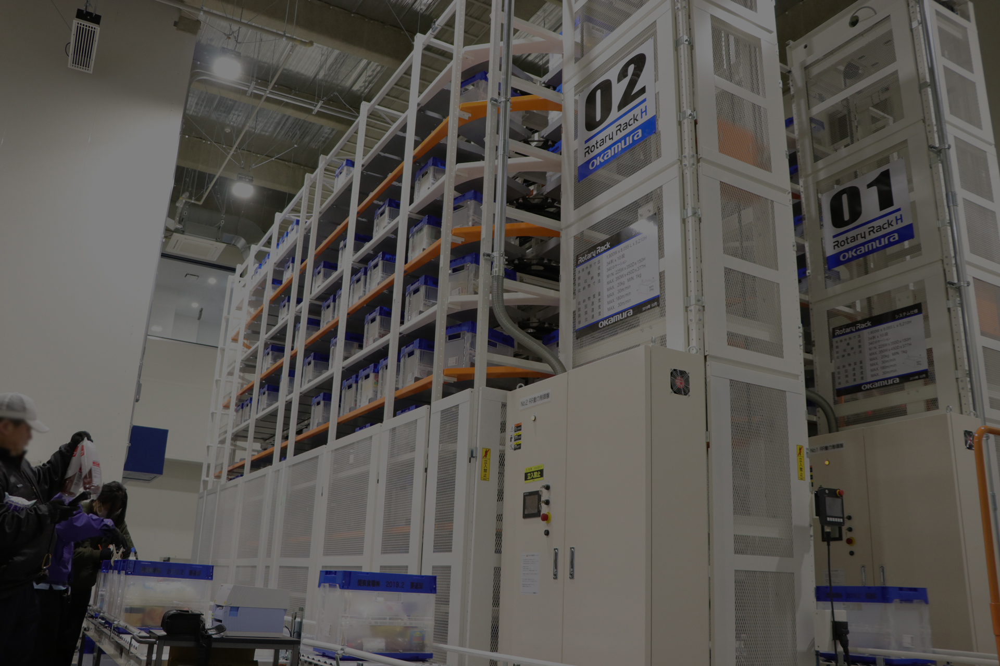
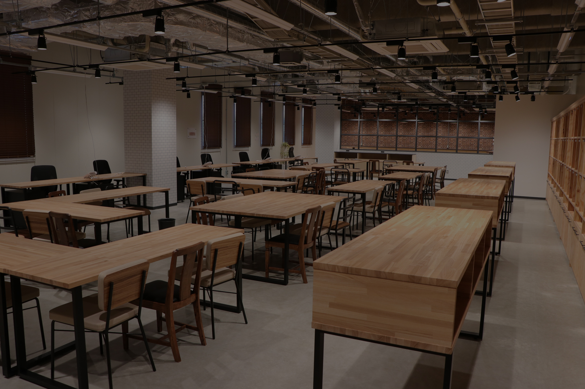
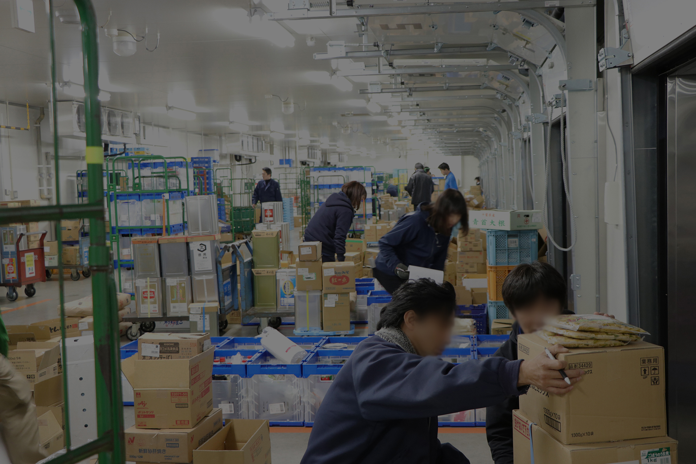

食空間創造Baseは今までの約2.5倍のキャパシティで品揃えを強化。
そして、ベルトコンベヤやロータリーラックといった最新の物流機器を導入。
作業軽減で、より大きなお客様満足を。
Next

普段は外で戦っている社員に、ホッとする空間とイノベーティブなアイディアが出るような空間、コミュニケーションの取れやすい空間にしていることで、よりよいパフォーマンスをお届けします。
Next

商品を豊富に揃える「商品力」。
確実にお届けする「対応力」。
お客様をしっかりサポートする「提案力」。
この力があるからこそ、早く、細かく、正確に商品をお届け出来るのです。
Next